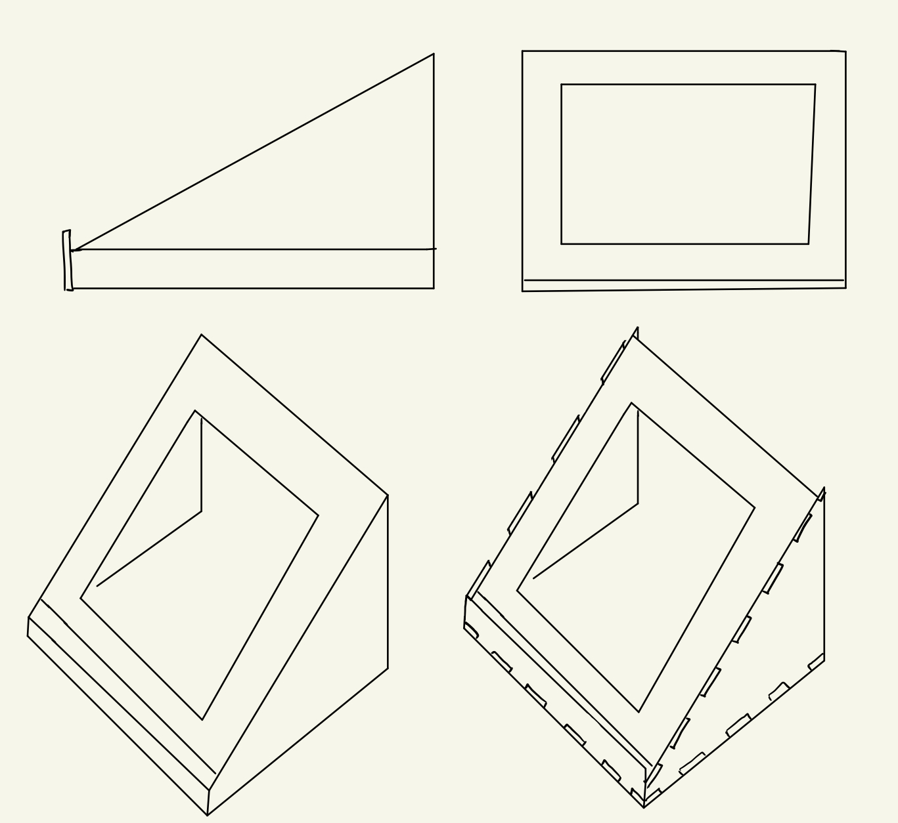

Tölvustuddur skurður
VERKEFNI 2 Í TÖLVUSTUDDRI FRAMLEIÐSLU
Lýsing á verkefni
Einstaklingsverkefni:
1. Notaðu vínylskerann til að búa til eitthvað. 100x50cm skurðarflötur max.
2. Hannaðu parametrískt, geirneglt (pressfit) módel af byggingareiningum. Módelið þarf að vera skalanlegt á mismunandi máta (efnisþykkt, hæðir og breiddir sem nemandi velur), útfært með parametríum í hugbúnaði að eigin vali. Mælt er með Autodesk Fusion 360 ef nemandi vill fá aðstoð kennara, en hafi nemandi tök á því að nota t.d. Solidworks eða Rhino 3D + Grasshopper þá er það í lagi.
Ef hönnunin samanstendur af byggingar einingum (nokkurnskonar púsluspil sem hægt er að raða upp á mismunandi máta) kemur það til hækkunar við mat á verkefni.
Hópaverkefni:
Veljið geislaskera og ákvarðið með prófunum kerf fyrir þann skera. Skjalfestið á ykkar persónulegu vefsíður.
Nemendur mega vinna saman 3 í hóp.
Undirbúningsvinna og markmið
Markmið verkefnis 2 í Tölvustuddri framleiðslu var að hanna parametrískt, geirneglt módel af byggingareiningum. Módelið þurfti að vera skalanlegt þannig hægt væri að stilla kerf og efnisþykkt, ásamt stærðum á flötum. Hægt var að velja um tvær mismunandi gerðir af efni; birkikrossvið eðaakríl. Ég ákvað að hanna tölvustand með hæfilegum halla og opnu baki. Í háskólanum er mikil vinna við tölvu og er því skynsamlegt að passa upp á líkamann þegar setið er við tölvuna tímunum saman. Þegar svo er þá getur verið sniðugt að hafa að minnsta kosti tölvuskjáinn í hæfilegri hæð fyrir hausinn og hálsinn. Þar kemur tölvustandurinn að góðum notum. Eins á tölvan mín það til að hitna þegar að hún er að keyra mörg forrit og sérstaklega þegar mikil foritun er í gangi. En þegar svo er á viftan til í að fara í gang og myndast þar töluverður hávaði. Markmiðið var þá að að tölvustandurinn gæti einnig minnkað bæði hávaðann og eins minnkað það að tölvan hitni með því að hafa frjálst flæði á lofti undir tölvunni. Þegar hugmyndin var komin á stað fór ég í að teikna þetta upp á iPad þaðan fór allt af stað.
???
AÐLÖGUN VEFSÍÐU AÐ VERKEFNI 2
????
Niðurstöður og lokaorð
Tímaskráning
Það fór talsverður tími í að klára þetta verkefni en hér er tímaskráningin:
3 tímar í FabLab að læra á búnaðinn(skerann), læra á Fusion og þar með ákveða parametra o.fl.
3 tímar að teikna.
3 tímar í FabLab að lagfæra teikninguna
0,5 tímar í að færa yfir í inkscape af pdf.
0,5 tímar í skurðinn og samsetninguna.
4 tímar í að aðlaga vefsíðuna að verkefninu.
2 tímar í að klára allt sem tengdist verkefninu.
Samtals um 16 tíma með flest öllu.
Hópaverkefnið
Þar sem við tókum ekki myndband læt ég fylgja myndband frá öðrum hóp. Hér er þaðmyndband